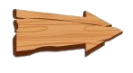
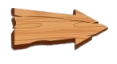

Soos Ramirez (dublado por César Marchetti, no Brasil e Alex Hirsch, nos EUA) - Jesus "Soos" Alzamirano Ramirez Soos tem 22 anos de idade Hispânico e trabalhador manual na Cabana do Mistério. Um amigo de Dipper e Mabel, Soos é gordo, adorador de hamster e bastante divertido e engraçado. Ele muitas vezes dirige os gêmeos em torno da cidade quando eles precisam. Ele é um pouco desajeitado, não o mais brilhante do grupo, e muitas vezes está cometendo erros. Apesar disso, ele tem uma grande variedade de talentos, como engenharia, DJ e pinball, e gosta de se unir com Dipper fazendo "coisas de garotos", como aquecimento salsichas em um microondas até que eles explodem. Ele diz "cara/veio" depois de quase toda frase. Em "O Jogo de Blendin", seu aniversário foi revelado: 13 de julho. Também foi revelado que ele não tinha um bom relacionamento com seu pai. No final da série, após Ford e Stan deixarem Gravity Falls, Soos se torna o novo Sr. Mistério da Cabana do Mistério. Soos entra em um relacionamento de longa distância com uma garota de Portland, Oregon, chamada Melody, que se muda para Gravity Falls e se torna a nova atendente de caixa da Cabana do Mistério. Hirsch baseou o personagem em Jesus Chambrot, um animador com quem ele era amigo no Instituto das Artes na Califórnia|CalArts.
Stanley "Tivô Stan" Pines (dublado por Marcelo Pissardini, no Brasil e Alex Hirsch, nos EUA) - O tio-avô de Dipper e Mabel Pines, melhor caracterizado por seu egoísmo e abrasividade. Ele corre e vive na Cabana do Mistério, uma armadilha turística que é classificado como "o museu mais bizarro do mundo". Tivô Stan é um vendedor em primeiro lugar, colocando a maior parte de seu esforço em ação, e está ansioso para vender alfaiates e bugigangas da cabana por preços assustadores. Por causa de seu esforço para ganhar dinheiro, seus métodos de obtê-lo nem sempre são legais. Quando ele não está ganhando dinheiro, ele geralmente está em casa assistindo televisão. Stan costuma usar um fez (chapéu)), o símbolo em que mudou ao longo dos episódios, leva em torno de uma cana de 8 bolas cobertas, e raramente usa um tapa-olho sobre seus óculos - o último dos quais é expressamente para a imagem pessoal. Frequentemente ele envia os gêmeos para o que eles consideram ser mandamentos escandalosos e imprevisíveis, mas ele é protetor deles e os ama incondicionalmente. Apesar de sua idade e físico questionável, Stan é fisicamente apto ao ponto de ser capaz de lutar quando ameaçado, mesmo contra zumbis e pterodáctilos. Atrás de sua máquina de guloseimas, ele tem uma escada escondida para um local desconhecido. No final da temporada 1, este local é revelado para conter um grande dispositivo oculto que é alimentado por informações criptografadas nas três revistas. Stan tem o primeiro diário, Gideão teve o segundo e Dipper tem o terceiro. Mais tarde, ele recolhe todos os três após a prisão Gideãozinho e quando Dipper lhe mostra o terceiro. Ele mais tarde entrega de volta o terceiro diário para Dipper. Como revelado em "Nem Tudo é o que Parece", ele estava tentando trazer seu irmão gêmeo de volta de outra dimensão. Para derrotar Bill no final da série, Stan perde sua memória, mas recupera-a depois de ver o álbum de recortes de Mabel. Ele era chamado de Stanford Pines, o nome de seu irmão gêmeo, e seu nome verdadeiro é Stanley. Ele é baseado no avô de Alex Hirsch, Stan.
Wendy Corduroy (dublada por Samira Fernandes, no Brasil e Linda Cardellini, nos EUA) - Wendy é madura, divertida e legal de 15 anos de idade que trabalha de meio expediente na Cabana do Mistério. Ela é a paixão de Dipper, e vários episódios se concentram em suas tentativas equivocadas de impressioná-la. Wendy afirmou que ela tinha muitos namorados no passado tantos, de fato, que há um ex-namorado com quem ela não consegue se lembrar nunca ter terminado com ele. Wendy é a mais velha e mais alta de sua família; Seu pai é Manly Dan, um dos lenhadores locais de Gravity Falls, e ela provou várias vezes que ela é muito filha de seu pai, tendo experiência como um lenhador, tremenda força física (quebrou o braço de um prisioneiro fugido muito maior e forte do que ela durante os eventos de Estranhagedon), e habilidades de sobrevivência pós-apocalíptica, que se mostraram úteis para tirar a si e aos seus amigos de muitas ligações. Sendo a típica adolescente sociável e indiferente, ela tem muitos amigos que estão em torno de sua idade. Seu mais recente ex-namorado é Robbie, que Dipper despreza e viu como um rival. Wendy quase sempre defende Dipper na frente de Robbie.